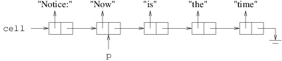
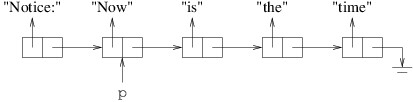

A LinkedListCell<T> will have as its only members two public properties, which can each be implemented using the default implementation:
Although the LinkedListCell<T> class is simple, we can use its Next property to chain together long sequences of its instances:

In the above figure, p is a LinkedListCell<string> variable. Each box in the figure represents an instance of LinkedListCell<string>. The boxes are each divided into two regions to indicate the two public properties for each cell. Because string is a reference type, we have shown each Data property as a reference to a string. The rightmost arrow that is bent downward is used to represent null. The entire sequence of LinkedListCell<string>s is called a linked list. Given this linked list:
LinkedListCell<string> cell = new LinkedListCell<string>();We can then set its Data property to "Notice:":
cell.Data = "Notice:";This gives us the following:
cell.Next = p;This yields the following:

This is what we want, unless we want p to refer to the beginning of the linked list. We can take care of this by copying the value of cell to p:p = cell;This yields the following (we are not showing cell because we are no longer interested in it, but it still refers to the same cell):

p = p.Next;This yields the following:

This has the effect of removing "Notice:" from the linked list to which p refers. Though we haven't shown it, cell still refers to the cell containing "Notice:"; hence, we still have access to the linked list beginning with this cell. However, if the program had no references remaining to this cell, we would have no way to retrieve it, and it would be available for garbage collection. This illustrates how we must take care not to lose a part of a linked list (unless we are finished with it) when we are manipulating it. With a little more work, cells can be inserted into or removed from arbitrary locations in a linked list. We will discuss how to do this in subsequent sections. For now let us simply observe that linked lists do not always continue until they reach a null - they can contain cycles, as follows: